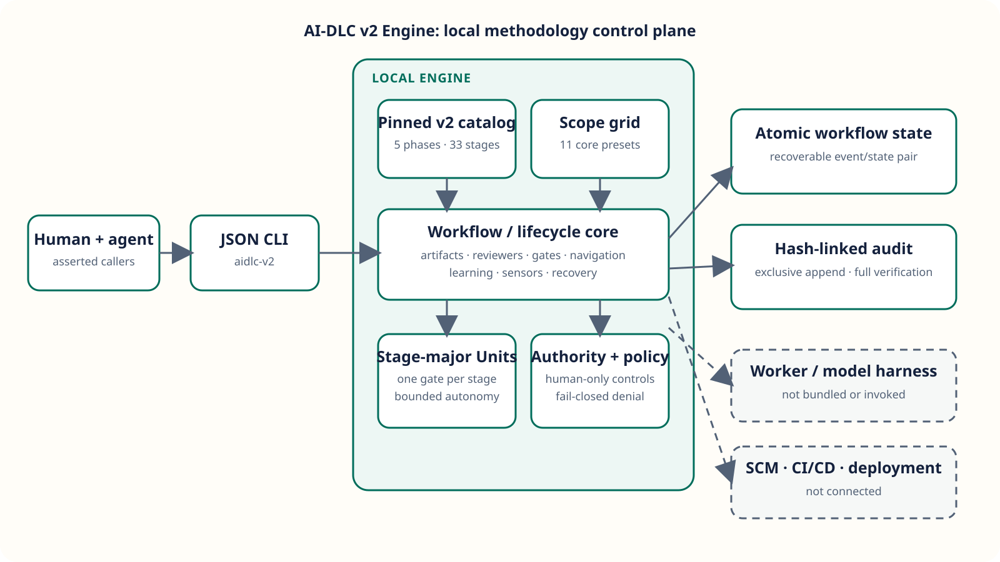

Catalog-driven planning
Five phases, 33 stages, and 11 exact core scope grids with independent depth and test strategies.
Independent AI-DLC v2 automation
AI-DLC v2 Engine turns the public five-phase, 33-stage methodology into deterministic scope plans, evidence guards, reviewer loops, Unit/Bolt controls, recovery, and tamper-evident local history.
Agents can prepare declared work and operate only inside explicit grants. Humans retain scope, composition, gate, autonomy, failure, learning, risk, and external-delivery authority.
Automation engine primitives
Five phases, 33 stages, and 11 exact core scope grids with independent depth and test strategies.
Declared outputs, upstream inputs, tri-mode questions, bounded reviewer loops, sensors, revisions, and human gates.
Stage-major per-Unit stages, zero-Unit incremental paths, walking-skeleton autonomy, halt-and-ask recovery, and hash-linked audit events.
Synthetic local demonstration
The deterministic bugfix path below matches the executable demo. This page contains synthetic data only, makes no network requests, and does not read a live project store.
Loading local example data.
Architecture

Honest readiness
The current release is a single-host local implementation. It has no user authentication, remote API, database, cryptographic signatures, key management, or distributed concurrency controls. It is an independent implementation pinned to the public AI-DLC Workflows `v2` branch at framework version 2.6.124, not an official AWS distribution.